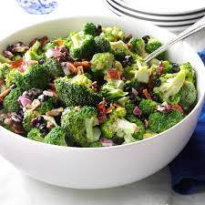

Loaded Broccoli Salad
Ingredients
- 3 slices bacon
- ¼ cup mayonnaise
- 4 cups chopped broccoli
Recipe
- Cook bacon in a large skillet over medium heat until crisp
- 5 to 7 minutes. Transfer to a paper-towel-lined plate. Reserve 1 tablespoon bacon fat. Chop the bacon when cool enough to handle.
- Whisk sour cream, mayonnaise, vinegar, pepper and the reserved bacon fat together in a large bowl.
- Add broccoli, scallions, cheese and the chopped bacon. Stir to coat with the dressing.

Veg Fried Wontons
Ingredients
- 250 gm all purpose flour
- 1 cup mushroom
- 1/2 cup cheese cubes
Recipe
- Make dough balls and roll them out as much as possible. We have to make super-thin sheets here.
- Now, add chopped garlic, green chillies and carrots. Remember to finely chop them before use. Saute and spike some salt over them so that they release some water.
- Add this filling on each wonton wrapper and join the edges to secure the shape. Heat oil for deep-frying in a pan and slide 2-3 pieces of wontons at a time
Tomato Soup
Ingredients
- Tomatoes
- Butter (Cream, Salt)
- Seasoning (Sugar, Salt, Spices)
Recipe
- First, melt 2 tablespoons of butter in a pot on medium-low heat. The butter should melt and slightly simmer, but not burn.
- Next, add 2 bay leaves and fry them in the butter for a few seconds until lightly browned, but again, not burned.
- Add ½ teaspoon of finely chopped garlic and ⅓ cup of finely chopped onions to the pan, and stir.
- Cover and simmer on a low to medium-low heat until the tomatoes soften, about 8 to 10 minutes